5,0For 2 dager siden
Kaffen er valgfri. Uten den smaker den som en sjokolademilkshake.
Frokost · Grøt
Havregrøt med kakao og et streif av kaffe. Toppes med bær og peanøttsmør.
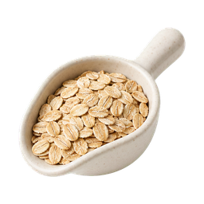
1 dl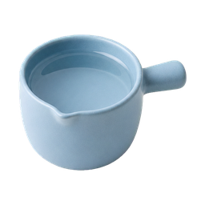
2 dl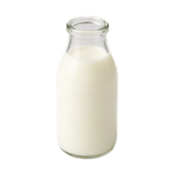
1 dl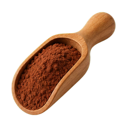
2 ss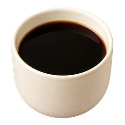
½ ts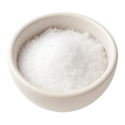
en klype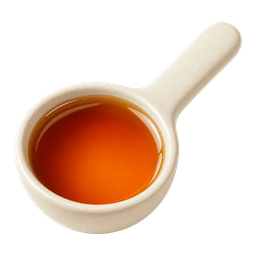
1 ss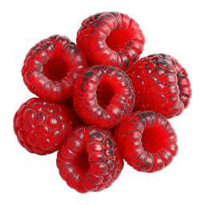
1 neve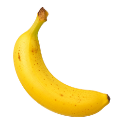
½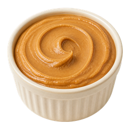
½ ss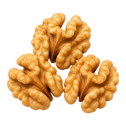
1 neve5,0For 2 dager siden
Kaffen er valgfri. Uten den smaker den som en sjokolademilkshake.
4,0For 5 dager siden
Brukte vanlig yoghurt i stedet for melk. Ble tykkere og helt fint.
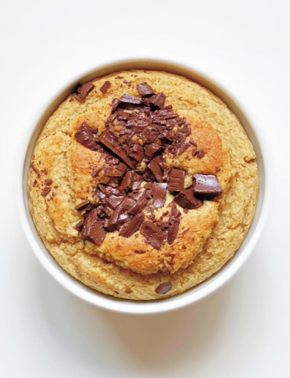
Bakt havregrøt cookie dough4,5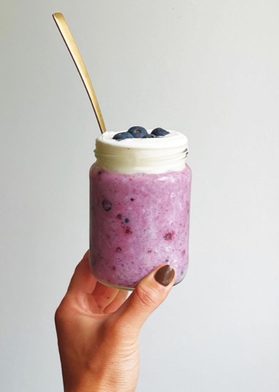
Overnight oats blåbær4,4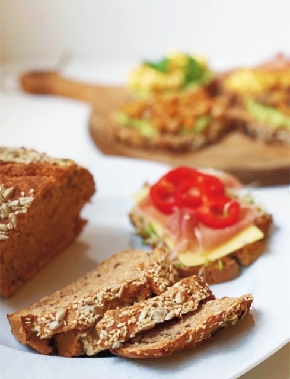
Hjemmelaget grovbrød4,8